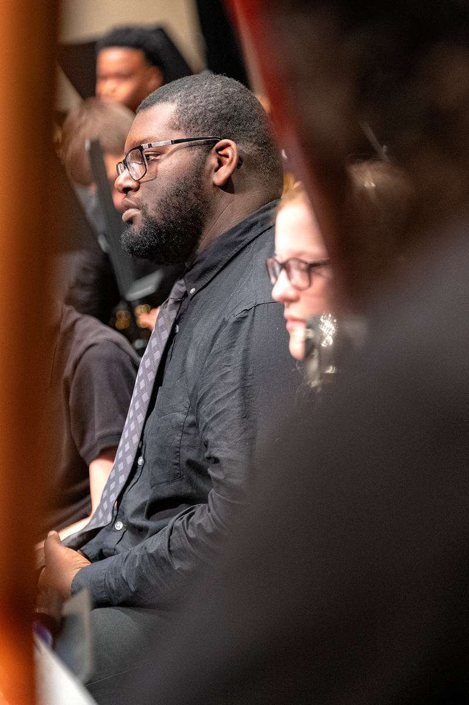

Musician, educator, and volunteer, Braxton Phillips, is a freelance musician and member of the Kokomo Park Band. When he’s not playing in gigs for musicals or jazz bands, you can find him volunteering his time with the band students at Central Middle School. Braxton has played with the IU School of Medicine Orchestra, Marian University Wind Ensemble, the Symphonic Youth Orchestra of Greater Indianapolis and in countless musical theatre pits. Braxton has spent 2 years as an SYO intern. He enjoys hanging out with his kids, teaching woodwinds, music production, watching/playing for musicals, and computer programming.